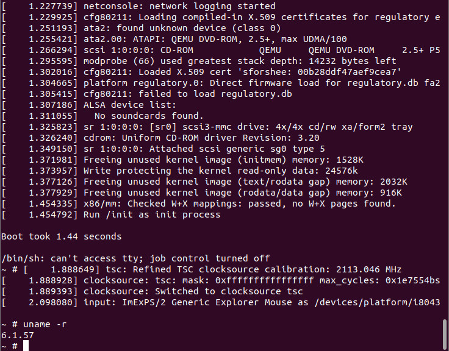

參考資訊：
https://busybox.net/downloads
https://cdn.kernel.org/pub/linux/kernel/
https://www.kernel.org/pub/linux/kernel/v6.x/
https://www.qemu.org/docs/master/system/riscv/virt.html
https://gist.github.com/ncmiller/d61348b27cb17debd2a6c20966409e86
https://jasonblog.github.io/note/arm_emulation/compiling_linux_kernel_for_qemu_arm_emulator.html
$ cd
$ wget https://www.kernel.org/pub/linux/kernel/v6.x/linux-6.1.57.tar.gz
$ tar xvf linux-6.1.57.tar.gz
$ cd linux-6.1.57
$ make x86_64_defconfig
$ make -j4
$ cd
$ wet https://busybox.net/downloads/busybox-1.37.0.tar.bz2
$ tar xvf busybox-1.37.0.tar.bz2
$ cd busybox-1.37.0
$ mkdir out
$ make O=out defconfig
$ make O=out menuconfig
Settings --> [V] Build static binary (no shared libs)
$ make O=out -j4
$ make O=out install
$ cd out/_install/
$ vim init
#!/bin/sh
mount -t proc none /proc
mount -t sysfs none /sys
echo -e "\nBoot took $(cut -d' ' -f1 /proc/uptime) seconds\n"
exec /bin/sh
$ chmod +x init
$ mkdir -pv {bin,sbin,etc,proc,sys,usr/{bin,sbin}}
$ find . -print0 | cpio --null -ov --format=newc | gzip -9 > ../initramfs-busybox-x86.cpio.gz
$ cd ..
$ cp ~/linux-6.1.57/arch/x86_64/boot/bzImage .
$ qemu-system-x86_64 -kernel bzImage -initrd initramfs-busybox-x86.cpio.gz -append "console=ttyS0"
